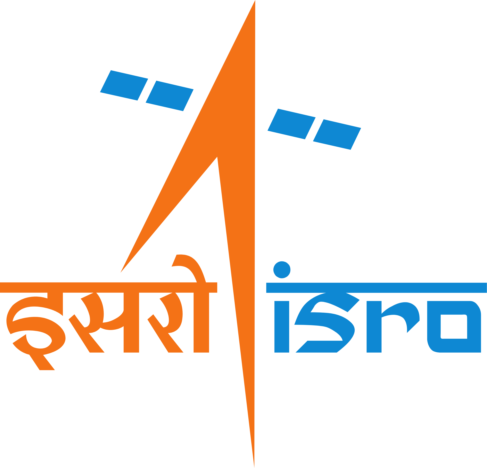

About Us
It was on 11th May 1998, that India had a prideful accomplishment of successfully conducting a Nuclear Missile Test at the Indian Army’s Pokhran range. It’s after this 1998 monumental event that our Former Prime Minister of India, Late Sh. Atal Bihari Vajpayee declared India a full Nuclear Country. Since then, 11th May is being observed as National Technology Day, with an aim to commemorate the achievements of scientists, researchers, engineers, and all others involved in the field of science and technology. To celebrate this special day, the Technology Development Board (TDB), a statutory body of the Department of Science and Technology, Government of India by the virtue of its mandate, honours technological innovations that have helped in the national growth under the aegis of National Awards from the year 1999.
For this, Technology Development Board seeks applications for National awards for the commercialization of technologies under three categories National Awards, MSME awards, and Startup awards. These awards are conferred to various industries for the successful commercialization of innovative indigenous technology. This annual honour provides a platform of recognition to the Indian industries and their technology provider who work to bring innovation to the market and help in contributing to the vision of “Aatma Nirbhar Bharat”.
Read More-
01 The
significance of National Technology Day in India
National Technology Day is an important day in India as it marks the successful nuclear test conducted in 1998, which propelled India into the league of nuclear nations. The day serves as a reminder of India's technological capabilities and achievements, and the role of technology in the country's development. It also highlights the contribution of Indian scientists and engineers to the advancement of science and technology in the country. National Technology Day is celebrated to promote technological innovations, research and development, and to inspire the younger generation to take up careers in science and technology.
-
02
Celebrations and events on National Technology Day
National Technology Day is celebrated with great enthusiasm and excitement across India. The day is marked by various programs and events that showcase the latest technological advancements in different fields, including robotics, artificial intelligence, biotechnology, space technology, and more. Educational institutions, government organizations, and private companies organize exhibitions, seminars, workshops, and lectures to promote scientific research and innovation. The National Technology Awards are also presented on this day to recognize the outstanding contributions of individuals and organizations to the field of technology.
-
03
Future prospects of technology in India
National Technology Day provides an opportunity to reflect on the future prospects of technology in India. With the emergence of disruptive technologies such as the Internet of Things, Big Data, and Blockchain, the potential for technological innovation and growth in India is immense. The government has launched various initiatives such as Digital India, Make in India, and Startup India to promote the growth of the technology sector in the country. National Technology Day serves as a platform to discuss the challenges and opportunities of the technology sector in India and to explore new avenues for technological development and innovation.
Gallary
Captured Special Movements for Country
{kind=link}
{kind=link}
{kind=link}
{kind=link}
{kind=link}
{kind=link}
{kind=link}